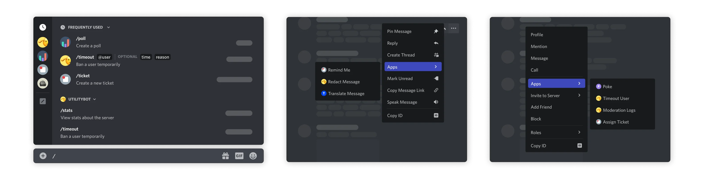
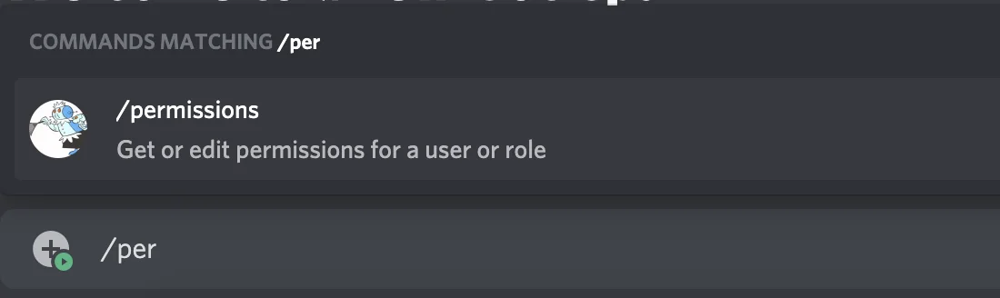
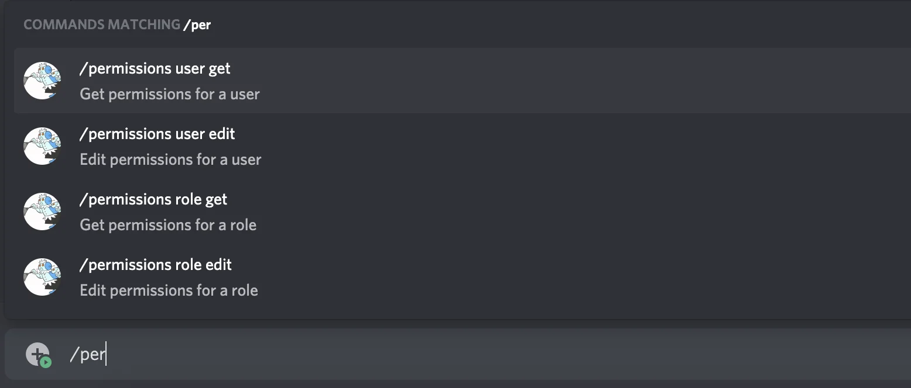
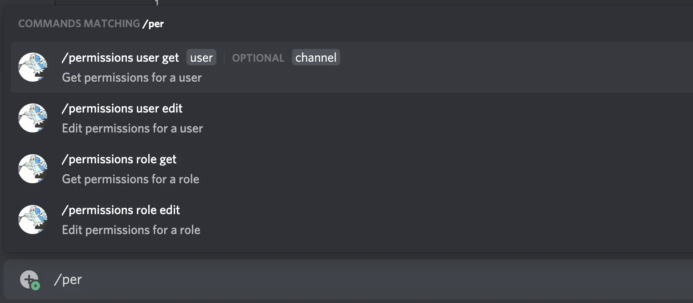
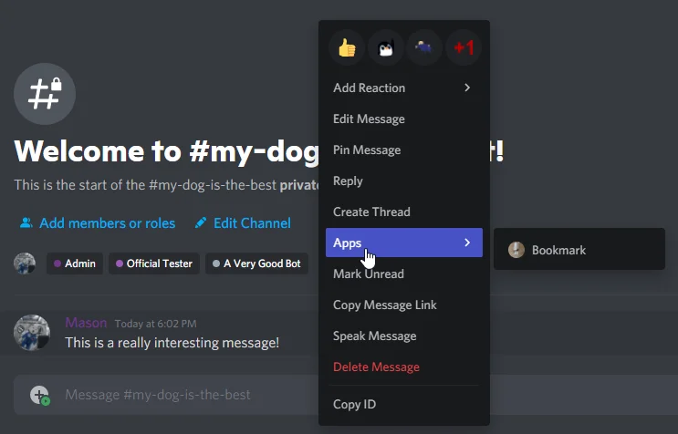

应用程序命令
应用程序命令是 Discord 客户端中与应用交互的原生方式。共有三种命令类型，分别通过不同界面访问：聊天输入框、消息上下文菜单（右上角菜单或右键点击消息）以及用户上下文菜单（右键点击用户）。

应用程序命令对象
应用程序命令命名
CHAT_INPUT (聊天输入框) 类型的命令名称及其选项名称必须符合正则表达式 ^[-_'\p{L}\p{N}\p{sc=Deva}\p{sc=Thai}]{1,32}$，且需启用 unicode 标志。若所用字母存在小写形式，则必须使用小写。无小写形式或不区分大小写的字符仍被允许。而 USER 和 MESSAGE 命令允许大小写混用，并可包含空格。
应用程序命令结构
| 字段 | 类型 | 描述 | 有效类型 |
|---|---|---|---|
| id | 雪花ID | 命令的唯一标识符 | 全部 |
| type？ | 命令类型之一 | 命令类型，默认值为1 |
全部 |
| application_id | 雪花ID | 父应用程序的唯一ID | 全部 |
| guild_id？ | 雪花ID | 命令所属服务器的ID（若非全局命令） | 全部 |
| name | 字符串 | 命令名称，长度为1至32个字符 | 全部 |
| name_localizations？ | ？字典，键为可用区域设置 | name字段的本地化字典，其值遵循与name相同的限制 |
全部 |
| description | 字符串 | CHAT_INPUT命令的描述，长度为1至100个字符；USER和MESSAGE命令则为空字符串 |
全部 |
| description_localizations？ | ？字典，键为可用区域设置 | description字段的本地化字典，其值遵循与description相同的限制 |
全部 |
| options？ * | 命令选项数组 | 命令的参数，最多25个 | CHAT_INPUT |
| default_member_permissions | ？字符串 | 以位集形式表示的权限集合 | 全部 |
| dm_permission？ | 布尔值 | 已弃用（建议改用contexts）；指示命令是否可在应用的私信中使用，仅适用于全局范围命令。默认情况下命令可见。 |
全部 |
| default_permission？ | ？布尔值 | 不推荐使用，该字段即将弃用。指示应用添加到服务器时命令是否默认启用，默认值为true |
全部 |
| nsfw？ | 布尔值 | 指示命令是否为年龄限制，默认值为false |
全部 |
| integration_types？ | 集成类型列表 | 命令可用的安装上下文，仅适用于全局范围命令。默认为应用的配置上下文 | 全部 |
| contexts？ | ？交互上下文类型列表 | 命令可用的交互上下文，仅适用于全局范围命令。 | 全部 |
| version | 雪花ID | 在重大记录更改时更新的自增版本标识符 | 全部 |
| handler？** | 命令处理器类型之一 | 确定交互是由应用的交互处理器处理还是由Discord处理 | PRIMARY_ENTRY_POINT |
* : options 仅适用于类型为 CHAT_INPUT 的应用命令。
** : handler 仅适用于带有 EMBEDDED 标志（即具备 Activity 功能的应用）且类型为 PRIMARY_ENTRY_POINT 的应用命令。
default_permission 即将被弃用。建议您将 default_member_permissions 设置为 "0"，从而默认仅允许管理员使用该命令；您也可以使用 contexts 来在与应用的私信会话中禁用全局范围的命令。
应用命令类型
| 名称 | 类型 | 描述 |
|---|---|---|
| CHAT_INPUT | 1 | 斜杠命令；一种基于文本的命令，用户输入 / 时显示 |
| USER | 2 | 基于 UI 的命令，在右键点击或轻触用户时出现 |
| MESSAGE | 3 | 基于 UI 的命令，在右键点击或轻触消息时出现 |
| PRIMARY_ENTRY_POINT | 4 | 基于 UI 的命令，作为调用应用 Activity 的主要入口 |
应用命令选项结构
必需的 options 必须优先于可选选项列出
-
name必须在应用命令选项数组中保持唯一性。 -
若已存在
choices，则autocomplete不可设为 true。
使用 autocomplete 的选项并不局限于应用程序所提供的选择范围。
应用命令选项类型
| 名称 | 值 | 备注 |
|---|---|---|
| SUB_COMMAND | 1 | |
| SUB_COMMAND_GROUP | 2 | |
| STRING | 3 | |
| INTEGER | 4 | 取值范围为 -2^53 至 2^53 的任意整数 |
| BOOLEAN | 5 | |
| USER | 6 | |
| CHANNEL | 7 | 包含所有频道类型及分类 |
| ROLE | 8 | |
| MENTIONABLE | 9 | 包括用户和角色 |
| NUMBER | 10 | 取值范围为 -2^53 至 2^53 的任意双精度浮点数 |
| ATTACHMENT | 11 | 附件 对象 |
应用命令选项选择结构
若为选项指定了 choices，则用户仅能从中选择有效值：
| 字段 | 类型 | 描述 |
|---|---|---|
| name | 字符串 | 长度为 1-100 个字符的选择名称 |
| name_localizations？ | ？包含可用区域设置键的字典 | name 字段的本地化字典，其值遵循与 name 相同的限制 |
| value | 字符串、整数或双精度数 * | 选项的值，若为字符串则长度上限为 100 个字符 |
* : value 的类型取决于其所属的选项类型。
入口点命令处理程序类型
| 名称 | 值 | 备注 |
|---|---|---|
| APP_HANDLER | 1 | 应用使用交互令牌处理交互 |
| DISCORD_LAUNCH_ACTIVITY | 2 | Discord 通过启动活动并发送跟进消息来处理交互，无需与应用协调 |
关于入口点命令处理程序类型的更多信息，请参见入口点处理程序一节。
授权您的应用程序
应用命令不依赖于服务器中的机器人用户，而是基于交互模型。若要在服务器中创建命令，您的应用必须获得 applications.commands 范围的授权。该范围既可独立使用，也会自动包含于 bot 范围中。
请求此范围时，我们采用了类似添加机器人的“快捷”OAuth2 流程，您无需完成整个流程、换取令牌或进行其他操作。
若您的应用程序无需依赖服务器中的机器人用户即可运行命令，则无需在URL中添加机器人作用域或权限位字段。
注册命令
命令仅能通过HTTP端点进行注册。
命令可设定为全局作用域或特定服务器作用域。全局命令适用于所有添加您应用程序的服务器。若应用程序拥有与用户共享共同服务器的机器人，其全局命令亦可在私信中使用。
服务器命令仅限于创建时指定的服务器，无法在私信中使用。在每个作用域（全局和服务器）内，每个应用程序的每种命令类型名称必须唯一。这意味着：
- 您的应用程序不得拥有两个同名的全局
CHAT_INPUT命令 - 您的应用程序不得在同一服务器内拥有两个同名的服务器
CHAT_INPUT命令 - 您的应用程序不得拥有两个同名的全局
USER命令 - 您的应用程序可以拥有同名的全局和服务器
CHAT_INPUT命令 - 您的应用程序可以拥有同名的全局
CHAT_INPUT和USER命令 - 您的应用程序不得拥有
PRIMARY_ENTRY_POINT服务器命令 - 多个应用程序可以拥有同名命令
此列表并非详尽。总体而言，请谨记命令名称在每个应用程序、每种类型以及每个作用域（全局和服务器）内必须保持唯一。
单个应用程序可拥有的命令数量如下：
- 100个全局
CHAT_INPUT命令 - 5个全局
USER命令 - 5个全局
MESSAGE命令 - 1个全局
PRIMARY_ENTRY_POINT命令
除PRIMARY_ENTRY_POINT外，所有命令类型在每个服务器均可拥有相同数量的服务器特定命令。
存在全局速率限制：每个服务器每天最多可创建200个应用程序命令
创建全局命令
全局命令适用于您应用程序的所有服务器。
全局命令具备固有的读取修复功能。这意味着若您更新了全局命令，而用户在命令更新前尝试使用，Discord将执行内部版本检查、拒绝该命令并触发重新加载。
要创建全局命令，请执行如下HTTP POST调用：
import requests
url = "https://discord.com/api/v10/applications/<my_application_id>/commands"
# 这是一个CHAT_INPUT或斜杠命令示例，类型为1
json = {
"name": "blep",
"type": 1,
"description": "发送随机可爱动物照片",
"options": [
{
"name": "animal",
"description": "动物类型",
"type": 3,
"required": True,
"choices": [
{
"name": "Dog",
"value": "animal_dog"
},
{
"name": "Cat",
"value": "animal_cat"
},
{
"name": "Penguin",
"value": "animal_penguin"
}
]
},
{
"name": "only_smol",
"description": "是否仅显示幼崽动物",
"type": 5,
"required": False
}
]
}
# 授权可使用机器人令牌
headers = {
"Authorization": "Bot <my_bot_token>"
}
# 或使用具备applications.commands.update作用域的应用程序客户端凭据令牌
headers = {
"Authorization": "Bearer <my_credentials_token>"
}
r = requests.post(url, headers=headers, json=json)
创建服务器命令
服务器命令仅在创建时指定的服务器内可用，且会即时更新。建议使用服务器命令进行快速测试，待准备就绪后再使用全局命令公开。
要创建服务器命令，请执行类似的HTTP POST调用，但需限定到特定的guild_id：
import requests
url = "https://discord.com/api/v10/applications/<my_application_id>/guilds/<guild_id>/commands"
# 这是一个USER命令示例，类型为2
json = {
"name": "High Five",
"type": 2
}
# 授权可使用机器人令牌
headers = {
"Authorization": "Bot <my_bot_token>"
}
# 或使用具备applications.commands.update作用域的应用程序客户端凭据令牌
headers = {
"Authorization": "Bearer <my_credentials_token>"
}
r = requests.post(url, headers=headers, json=json)
更新和删除命令
您可以通过向命令端点发送 DELETE 和 PATCH 请求来删除或更新命令。对应的端点如下：
- 全局命令：
applications/<my_application_id>/commands/<command_id> - 服务器命令：
applications/<my_application_id>/guilds/<guild_id>/commands/<command_id>
由于命令在同一类型和作用域内名称唯一，因此 POST 请求创建新命令时会被视为更新插入操作。这意味着，如果您使用已存在的名称创建新命令，系统将自动更新现有命令。
有关应用命令端点及其参数的详细说明，请参阅端点章节。
上下文
在应用命令对象中，命令包含两组上下文，用于配置其使用时机和位置：
关于这两类命令上下文的详细信息将在后续章节中说明。
请注意，上下文与安装到服务器的应用的命令权限相互独立，互不影响。
安装上下文
安装上下文指的是应用被安装的位置——可以是服务器、用户，或同时支持两者。如果您的应用支持多种安装上下文，有时您可能希望某些命令仅适用于其中一种场景。例如，应用可能包含一个 /profile 命令，该命令仅在安装到用户时才适用。
只要所包含的上下文已在应用层级获得支持，您就可以在创建或更新命令时通过 integration_types 字段设置命令所支持的安装上下文。
命令的 integration_types 值可能会影响其在哪些交互上下文中可见。
交互上下文
命令的交互上下文决定了其在 Discord 客户端中的可用位置，您可以在创建或更新命令时通过设置 contexts 字段进行配置。
共有三种交互上下文类型，分别对应不同的使用场景：GUILD (0)、BOT_DM (1) 和 PRIVATE_CHANNEL (2)。需要注意的是，PRIVATE_CHANNEL 交互上下文仅对安装到用户的命令有意义（即命令的 integration_types 包含 USER_INSTALL）。
权限
应用命令权限允许您在服务器内为最多 100 个用户、角色或频道启用或禁用命令。具备相应权限的用户也可以在客户端中更新命令权限。
更新命令权限时，必须使用Bearer token 进行认证。若使用机器人令牌，将会返回错误。
您可以通过 GET /applications/{application.id}/guilds/{guild.id}/commands/{command.id}/permissions 端点获取命令的当前权限。响应中将包含一个名为 permissions 的数组，其中列出了相关 ID 及其权限类型。
命令权限可通过 PUT /applications/{application.id}/guilds/{guild.id}/commands/{command.id}/permissions 端点进行更新。调用此端点时，应用程序必须使用带有 applications.commands.permissions.update 范围的 Bearer 令牌，且该令牌需来自具备足够权限的用户。认证用户（非您的应用程序或机器人用户）必须同时满足以下所有条件，其权限才被视为充分：
- 在编辑命令的服务器中拥有管理服务器及管理角色的权限
- 具备运行该命令的能力
- 拥有管理受影响资源的权限（根据权限类型，可能是角色、用户或频道）
权限的同步与取消同步
用户可在客户端中通过 服务器设置 > 集成，点击已安装应用右侧的 管理，进入命令权限界面。在该界面顶部，可针对特定用户、角色或频道编辑权限。默认情况下，这些顶层权限将作用于该应用的所有命令。不过，每个权限均可取消同步，并为单个命令进行自定义，以实现更精细的权限控制。
若某命令的权限取消同步，即与顶层权限不一致，界面将显示“未同步”提示给用户。
应用程序命令权限对象
服务器应用程序命令权限结构
此结构在获取某应用程序命令于服务器中的权限时返回。
| 字段 | 类型 | 描述 |
|---|---|---|
| id | snowflake | 命令或应用程序的 ID |
| application_id | snowflake | 命令所属应用程序的 ID |
| guild_id | snowflake | 服务器的 ID |
| permissions | 应用程序命令权限的数组 | 命令在服务器中的权限，上限为 100 个 |
若 id 字段为应用程序 ID 而非命令 ID，则权限适用于所有未设置显式覆盖的命令。
应用程序命令权限结构
应用程序命令权限允许您在服务器内为特定用户、角色或频道启用或禁用命令。
| 字段 | 类型 | 描述 |
|---|---|---|
| id | snowflake | 角色、用户或频道的 ID，亦可为权限常量 |
| type | 应用程序命令权限类型 | 角色（1）、用户（2）或频道（3） |
| permission | boolean | true 表示允许，false 表示禁止 |
应用命令权限常量
以下常量可用于命令权限负载中的 id 字段。
| 权限 | 值 | 类型 | 描述 |
|---|---|---|---|
@everyone | guild_id | 雪花ID | 服务器中的所有成员 |
| 所有频道 | guild_id - 1 | 雪花ID | 服务器中的所有频道 |
应用命令权限类型
| 名称 | 值 |
|---|---|
| 角色 | 1 |
| 用户 | 2 |
| 频道 | 3 |
为实现精细化的命令访问控制，各类服务器命令及全局命令均支持应用命令权限。具备必要权限的服务器成员与应用可允许或禁止特定用户及角色使用命令，亦可针对整个频道切换命令状态。
如同线程继承自父频道的用户与角色权限，任一频道的命令权限同样适用于其包含的所有线程。
若您不具备使用某命令的权限，该命令将不会出现在命令选择器中。拥有管理员权限的成员则可使用所有命令。
使用默认权限
创建命令时，可通过 default_member_permissions 和 context 字段添加默认权限。由于默认权限在命令创建阶段配置，且不针对特定角色、用户或频道，因此无需任何Bearer令牌。
default_member_permissions 字段用于在创建命令时设定用户使用该命令所需的权限。其值为经过按位或运算的权限集合，并以字符串形式序列化。若设为 "0"，将默认禁止服务器内所有成员使用该命令，除非设置了特定权限覆盖或用户拥有管理员权限。
设置全局命令的交互上下文时，您还可在 contexts 中包含 BOT_DM (1)，以控制该命令是否能在与您应用的私信中运行。请注意，服务器命令不支持 BOT_DM 交互上下文。
编辑权限示例
例如，默认情况下，以下命令将仅允许服务器中的管理员使用：
{
"name": "permissions_test",
"description": "默认权限测试",
"type": 1,
"default_member_permissions": "0"
}
而如下设置则仅对拥有 MANAGE_GUILD 权限的用户启用该命令：
permissions = str(1 << 5)
command = {
"name": "permissions_test",
"description": "默认权限测试",
"type": 1,
"default_member_permissions": permissions
}
以下操作将禁用特定频道的命令：
A_SPECIFIC_CHANNEL = "<channel_id>"
url = "https://discord.com/api/v10/applications/<application_id>/guilds/<my_guild_id>/commands/<my_command_id>/permissions"
json = {
"permissions": [
{
"id": A_SPECIFIC_CHANNEL,
"type": 3,
"permission": False
}
]
}
headers = {
"Authorization": "Bearer <my_bearer_token>"
}
r = requests.put(url, headers=headers, json=json)
斜杠命令
斜杠命令（即 CHAT_INPUT 类型）属于应用命令的一种。其结构包含名称、描述及一组 options（可视为函数参数）。名称与描述帮助用户从众多命令中快速定位所需功能，而 options 则在用户填写命令时验证其输入的有效性。
斜杠命令还支持通过组和子命令进一步实现命令的组织与管理。相关细节将在后续内容中展开说明。
斜杠命令的名称、描述和值属性（包括命令本身、其选项（含子命令和组）以及选项值）的总字符数上限为8000个字符。当存在本地化字段时，仅每个字段的最长本地化内容（包括默认值）会被计入字数限制。
斜杠命令示例
{
"name": "blep",
"type": 1,
"description": "发送随机可爱动物照片",
"options": [
{
"name": "animal",
"description": "动物类型",
"type": 3,
"required": true,
"choices": [
{
"name": "狗",
"value": "animal_dog"
},
{
"name": "猫",
"value": "animal_cat"
},
{
"name": "企鹅",
"value": "animal_penguin"
}
]
},
{
"name": "only_smol",
"description": "是否仅显示幼年动物",
"type": 5,
"required": false
}
]
}
当用户使用斜杠命令时，您的应用程序将接收到交互信息：
交互示例
斜杠命令交互查看斜杠命令交互的示例载荷
{
"type": 2,
"token": "A_UNIQUE_TOKEN",
"member": {
"user": {
"id": "53908232506183680",
"username": "Mason",
"avatar": "a_d5efa99b3eeaa7dd43acca82f5692432",
"discriminator": "1337",
"public_flags": 131141
},
"roles": ["539082325061836999"],
"premium_since": null,
"permissions": "2147483647",
"pending": false,
"nick": null,
"mute": false,
"joined_at": "2017-03-13T19:19:14.040000+00:00",
"is_pending": false,
"deaf": false
},
"id": "786008729715212338",
"guild_id": "290926798626357999",
"app_permissions": "442368",
"guild_locale": "en-US",
"locale": "en-US",
"data": {
"options": [{
"type": 3,
"name": "cardname",
"value": "The Gitrog Monster"
}],
"type": 1,
"name": "cardsearch",
"id": "771825006014889984"
},
"channel_id": "645027906669510667"
}
子命令与子命令组
当前，子命令和子命令组都会显示在命令浏览器的顶层。未来可能会将其调整为嵌套式自动补全选项。
对于希望创建更有组织性和复杂命令组的开发者来说，子命令和命令组无疑是最佳选择。
子命令通过在命令或组内指定操作来组织您的命令。
子命令组则通过将相似操作或资源的子命令分组来进一步整理您的子命令。
这些并非强制规则。您可以自由使用子命令和组，这仅是我们的设计思路。
使用子命令或子命令组将使您的基础命令无法单独使用。如果您同时拥有作为子命令或子命令组的/permissions add | remove，则无法将基础的/permissions命令作为有效命令发送。
我们支持在组内嵌套一级层级，即您的顶层命令可以包含子命令组，而这些组可以包含子命令。这是唯一支持的嵌套类型。以下是一些可视化示例：
有效
command
|
|__ subcommand
|
|__ subcommand
----
有效
command
|
|__ subcommand-group
|
|__ subcommand
|
|__ subcommand-group
|
|__ subcommand
----
有效
command
|
|__ subcommand-group
|
|__ subcommand
|
|__ subcommand
-------
无效
command
|
|__ subcommand-group
|
|__ subcommand-group
|
|__ subcommand-group
|
|__ subcommand-group
----
无效
command
|
|__ subcommand
|
|__ subcommand-group
|
|__ subcommand
|
|__ subcommand-group
示例演练
让我们看一个示例。假设您运行一个管理机器人，并希望创建一个具有以下功能的/permissions命令：
- 获取用户或角色的服务器权限
- 获取用户或角色在特定频道上的权限
- 修改用户或角色的服务器权限
- 修改用户或角色在特定频道上的权限
我们将首先定义/permissions的顶层信息：
{
"name": "permissions",
"description": "获取或编辑用户或角色的权限",
"options": []
}

现在我们有一个名为 permissions 的命令，旨在同时作用于用户和角色。与其分别创建两个独立命令，我们选择使用子命令组来实现这一目标。采用子命令组的原因在于我们需要对相似资源进行分类管理：user 或 role。
{
"name": "permissions",
"description": "获取或编辑用户或角色的权限",
"options": [
{
"name": "user",
"description": "获取或编辑用户权限",
"type": 2 // 类型 2 代表 SUB_COMMAND_GROUP
},
{
"name": "role",
"description": "获取或编辑角色权限",
"type": 2
}
]
}
您可能会注意到，这类命令不会直接显示在命令资源管理器中。这是因为子命令组本质上是命令的“文件夹”，而我们目前创建的是两个空文件夹。因此，让我们继续完善它。
在成功创建 user 和 role 这两个“文件夹”之后，我们希望实现权限的 获取 与 编辑 功能。我们可以在子命令组中进一步创建 get 和 edit 子命令：
{
"name": "permissions",
"description": "获取或编辑用户或角色的权限",
"options": [
{
"name": "user",
"description": "获取或编辑用户权限",
"type": 2, // 类型 2 代表 SUB_COMMAND_GROUP
"options": [
{
"name": "get",
"description": "获取用户权限",
"type": 1 // 类型 1 代表 SUB_COMMAND
},
{
"name": "edit",
"description": "编辑用户权限",
"type": 1
}
]
},
{
"name": "role",
"description": "获取或编辑角色权限",
"type": 2,
"options": [
{
"name": "get",
"description": "获取角色权限",
"type": 1
},
{
"name": "edit",
"description": "编辑角色权限",
"type": 1
}
]
}
]
}

接下来，我们需要为这些命令添加参数。例如，若选择 user，则需指定具体用户；若选择 role，则需指定具体角色。此外，还需支持区分服务器级别权限与频道特定权限。为此，我们可以引入可选参数：
{
"name": "permissions",
"description": "获取或编辑用户或角色的权限",
"options": [
{
"name": "user",
"description": "获取或编辑用户权限",
"type": 2, // 类型 2 代表 SUB_COMMAND_GROUP
"options": [
{
"name": "get",
"description": "获取用户权限",
"type": 1, // 类型 1 代表 SUB_COMMAND
"options": [
{
"name": "user",
"description": "目标用户",
"type": 6, // 类型 6 代表 USER
"required": true
},
{
"name": "channel",
"description": "目标频道权限。若未指定，则返回服务器权限",
"type": 7, // 类型 7 代表 CHANNEL
"required": false
}
]
},
{
"name": "edit",
"description": "编辑用户权限",
"type": 1,
"options": [
{
"name": "user",
"description": "目标用户",
"type": 6,
"required": true
},
{
"name": "channel",
"description": "目标频道权限。若未指定，则编辑服务器权限",
"type": 7,
"required": false
}
]
}
]
},
{
"name": "role",
"description": "获取或编辑角色权限",
"type": 2,
"options": [
{
"name": "get",
"description": "获取角色权限",
"type": 1,
"options": [
{
"name": "role",
"description": "目标角色",
"type": 8, // 类型 8 代表 ROLE
"required": true
},
{
"name": "channel",
"description": "目标频道权限。若未指定，则返回服务器权限",
"type": 7,
"required": false
}
]
},
{
"name": "edit",
"description": "编辑角色权限",
"type": 1,
"options": [
{
"name": "role",
"description": "目标角色",
"type": 8,
"required": true
},
{
"name": "channel",
"description": "目标频道权限。若未指定，则编辑服务器权限",
"type": 7,
"required": false
}
]
}
]
}
]
}
大功告成！虽然JSON结构看起来有些复杂，但我们最终构建的是一个可作用于多个操作的单一命令，它能够进一步限定到特定资源，甚至通过可选参数实现更精细的控制。以下是完整整合后的效果。

用户命令
用户命令是出现在用户上下文菜单（右键点击或轻触）中的应用命令，为您的应用提供针对用户的快捷操作入口。这类命令不接受任何参数，并在交互响应中返回被点击的用户信息。
用户必须拥有在调用命令的频道中发送文本消息的权限，否则将收到交互返回的"权限被拒绝"错误。创建用户命令时不允许使用description字段，但为避免破坏数据模型结构，获取命令时该字段会返回空字符串（而非null）。
示例用户命令
{
"name": "击掌",
"type": 2
}
当用户触发命令时，您的应用将收到如下交互信息：
示例交互
用户命令交互查看用户命令交互的示例负载
{
"application_id": "775799577604522054",
"channel_id": "772908445358620702",
"data": {
"id": "866818195033292850",
"name": "context-menu-user-2",
"resolved": {
"members": {
"809850198683418695": {
"avatar": null,
"is_pending": false,
"joined_at": "2021-02-12T18:25:07.972000+00:00",
"nick": null,
"pending": false,
"permissions": "246997699136",
"premium_since": null,
"roles": []
}
},
"users": {
"809850198683418695": {
"avatar": "afc428077119df8aabbbd84b0dc90c74",
"bot": true,
"discriminator": "7302",
"id": "809850198683418695",
"public_flags": 0,
"username": "VoltyDemo"
}
}
},
"target_id": "809850198683418695",
"type": 2
},
"guild_id": "772904309264089089",
"guild_locale": "en-US",
"app_permissions": "442368",
"id": "867794291820986368",
"locale": "en-US",
"member": {
"avatar": null,
"deaf": false,
"is_pending": false,
"joined_at": "2020-11-02T20:46:57.364000+00:00",
"mute": false,
"nick": null,
"pending": false,
"permissions": "274877906943",
"premium_since": null,
"roles": ["785609923542777878"],
"user": {
"avatar": "a_f03401914fb4f3caa9037578ab980920",
"discriminator": "6538",
"id": "167348773423415296",
"public_flags": 1,
"username": "ian"
}
},
"token": "UNIQUE_TOKEN",
"type": 2,
"version": 1
}
消息命令
消息命令是出现在消息上下文菜单（右键点击或轻触）中的应用命令，为您的应用提供针对消息的快捷操作功能。这类命令不接受参数，并在交互响应中返回被点击的消息内容。
创建消息命令时同样不允许使用description字段，但获取命令时会返回空字符串（而非null）以保持数据模型兼容性。
示例消息命令
{
"name": "添加书签",
"type": 3
}

当用户触发消息命令时，您的应用将收到如下交互信息：
示例交互
消息命令交互查看消息命令交互的示例负载
{
"application_id": "775799577604522054",
"channel_id": "772908445358620702",
"data": {
"id": "866818195033292851",
"name": "context-menu-message-2",
"resolved": {
"messages": {
"867793854505943041": {
"attachments": [],
"author": {
"avatar": "a_f03401914fb4f3caa9037578ab980920",
"discriminator": "6538",
"id": "167348773423415296",
"public_flags": 1,
"username": "ian"
},
"channel_id": "772908445358620702",
"components": [],
"content": "示例消息内容",
"edited_timestamp": null,
"embeds": [],
"flags": 0,
"id": "867793854505943041",
"mention_everyone": false,
"mention_roles": [],
"mentions": [],
"pinned": false,
"时间戳": "2021-07-22T15:42:57.744000+00:00",
"文字转语音": false,
"类型": 0
}
}
},
"target_id": "867793854505943041",
"类型": 3
},
"guild_id": "772904309264089089",
"服务器区域设置": "en-US",
"app_permissions": "442368",
"ID": "867793873336926249",
"区域设置": "en-US",
"成员": {
"头像": null,
"已聋": false,
"待处理": false,
"joined_at": "2020-11-02T20:46:57.364000+00:00",
"已静音": false,
"昵称": null,
"待定": false,
"权限": "274877906943",
"会员起始时间": null,
"角色": ["785609923542777878"],
"用户": {
"头像": "a_f03401914fb4f3caa9037578ab980920",
"识别码": "6538",
"ID": "167348773423415296",
"public_flags": 1,
"用户名": "ian"
}
},
"令牌": "UNIQUE_TOKEN",
"类型": 2,
"版本": 1
}
入口点命令
要使入口点命令对用户可见，应用必须启用活动功能。
示例入口点命令
{
"名称": "启动",
"描述": "启动与朋友竞速",
"类型": 4,
"处理器": 2
}
入口点处理器
当用户调用应用的入口点命令时，处理器的值将决定交互的处理方式：
- 对于
应用处理器（1），应用需负责响应交互。它可以通过使用启动活动（类型12）交互回调类型启动应用关联的活动来响应，或采取其他操作（如在频道中发送跟进消息）。 - 对于
Discord启动活动（2），Discord将自动处理交互，启动关联活动并向启动频道发送消息。
默认入口点命令
当您启用活动时，系统会自动为您的应用创建一个入口点命令（命名为"启动"），并将Discord启动活动（2）设置为入口点处理器。您可以通过调用获取全局应用命令端点并查找"启动"命令来获取自动创建命令的详细信息（如其ID）。
有关更新或替换默认入口点命令的详细信息，请参阅设置入口点命令指南。
自动完成
自动完成交互功能允许您的应用在用户输入时动态返回选项建议。
自动完成交互可以返回选项值的部分数据。只要用户输入通过客户端验证，您的应用就会收到任何现有用户输入的部分数据。例如，您可能会收到部分字符串，但不会收到无效数字。用户当前正在输入的选项将附带focused: true布尔字段发送，用户已填写的选项也会发送但不带focused字段。这是一个特殊情况，由于用户尚未填写，否则必需的选项可能不存在。
此验证仅在客户端进行。
{
"类型": 4,
"数据": {
"ID": "816437322781949972",
"名称": "空气喇叭",
"类型": 1,
"版本": "847194950382780532",
"选项": [
{
"类型": 3,
"名称": "变体",
"值": "用户正在输入的数据",
"已聚焦": true
}
]
}
}
本地化
应用命令支持本地化功能，可根据客户端所选语言自动显示对应的本地化名称与描述。此功能为可选配置。在创建或更新应用命令时，只需提交相应的 name_localizations 和 description_localizations 字段，即可对命令、子命令、选项的名称与描述，以及选项选择项的名称进行本地化处理。
应用命令支持部分本地化，无需涵盖所有可用语言环境，同一命令内的不同字段也不必支持相同的语言环境集合。若某一语言环境未包含在字段的本地化字典中，该语言环境的用户将看到该字段的默认值。无需为所有语言环境重复填写默认值，任何与默认值完全一致的本地化内容都将被自动忽略。
本地化的选项名称还需满足一项额外约束：必须与该命令中所有其他默认选项名称，以及该命令下同一语言环境内的所有其他选项名称保持唯一性。
即使启用了命令本地化，客户端接收到的交互负载仍会使用默认的命令、子命令及选项名称。如需对交互响应进行本地化，可通过交互负载中的 locale 字段识别客户端所选语言。
一个已配置本地化的应用命令示例如下：
{
"名称": "birthday",
"类型": 1,
"描述": "Wish a friend a happy birthday",
"name_localizations": {
"zh-CN": "生日",
"el": "γενέθλια"
},
"description_localizations": {
"zh-CN": "祝你朋友生日快乐"
},
"选项": [
{
"名称": "age",
"类型": 4,
"描述": "Your friend's age",
"name_localizations": {
"zh-CN": "岁数"
},
"description_localizations": {
"zh-CN": "你朋友的岁数"
}
}
]
}
语言环境回退机制
应用命令内置了语言环境回退机制：若用户的区域设置未包含在本地化配置中，系统将自动回退至备用语言环境；若备用语言环境同样缺失，则最终使用默认值。
请务必在对应的语言环境键中明确设置默认值，否则可能意外显示回退值。例如，若默认值为 en-US 却未在本地化字典中指定 en-US 键值，则使用 en-US 的用户将看到已配置的 en-GB 值。假设某命令的默认名称为 "color"，而本地化仅设置了 en-GB 的值为 "colour"，那么 en-US 用户将显示 "colour"，因为缺少 en-US 键值。
| 语言环境 | 回退语言环境 |
|---|---|
| en-US | en-GB |
| en-GB | en-US |
| es-419 | es-ES |
获取本地化命令
虽然多数返回应用命令对象的端点会默认包含 name_localizations 和 description_localizations 字段，但部分端点（如返回应用全部服务器或全局命令的 GET 类端点）除外。此类端点将额外提供 name_localized 和 description_localized 字段，仅包含与请求者语言环境相关的本地化内容（完整字典仍可通过指定查询参数获取）。
例如，若使用 zh-CN 语言环境发起批量 GET 请求（包含上述命令），返回对象将呈现如下结构：
{
"名称": "birthday",
"类型": 1,
"描述": "Wish a friend a happy birthday",
"name_localized": "生日",
"description_localized": "祝你朋友生日快乐",
"选项": [
{
"名称": "age",
"类型": 4,
"描述": "Your friend's age",
"name_localized": "岁数",
"description_localized": "你朋友的岁数",
}
]
}
若请求者的语言环境未在本地化字典中找到，则相应字段的 name_localized 或 description_localized 也不会返回。
语言环境的判定优先级依次为：X-Discord-Locale 请求头 → Accept-Language 请求头 → 用户设置的语言环境。
年龄限制命令
若命令包含年龄限制内容，在创建或更新时必须将 nsfw 字段设为 true。将命令标记为年龄限制后，其可见性和访问权限将受到限制，包括可访问的用户及频道范围。
已启用发现功能的应用（需出现在应用目录中）不得包含任何年龄限制的命令或内容。
使用年龄限制命令
用户如需使用年龄限制命令，须年满 18 周岁，并满足以下任一条件：
- 通过年龄限制频道访问；
- 或在用户设置中启用年龄限制命令后，通过与应用私信访问。
有关访问和使用年龄限制命令的更多信息，请参见帮助中心。
端点
获取全局应用命令
GET/applications/{application.id}/commands 若启用了本地化功能，此端点返回的对象可能包含额外字段。
获取您应用的所有全局命令，返回一个由应用命令对象组成的数组。
查询字符串参数
| 字段 | 类型 | 描述 |
|---|---|---|
| with_localizations？ | 布尔值 | 是否在返回对象中包含完整本地化字典（name_localizations 和 description_localizations），而非仅返回 name_localized 和 description_localized 字段。默认值为 false。 |
创建全局应用命令
POST/applications/{application.id}/commands 若创建与现有命令同名的命令，将覆盖原有命令。
创建新的全局命令。若不存在同名命令，返回状态码 201；若已存在，则返回 200（此时原命令将被覆盖）。两种响应均包含一个应用命令对象。
JSON 参数
| 字段 | 类型 | 描述 |
|---|---|---|
| name | string | 命令名称，长度为1至32个字符 |
| name_localizations？ | ？dictionary with keys in 可用区域设置 | name字段的本地化字典，其值遵循与name相同的限制 |
| description？ | string | 针对CHAT_INPUT命令的1至100字符描述 |
| description_localizations？ | ？dictionary with keys in 可用区域设置 | description字段的本地化字典，其值遵循与description相同的限制 |
| options？ | array of 应用程序命令选项 | 命令的参数，最多可包含25个 |
| default_member_permissions？ | ？string | 以位集形式表示的权限集合 |
| dm_permission？ | ？boolean | 已弃用（请改用contexts）；指示命令是否在应用程序的私信中可用，仅适用于全局范围命令。默认情况下，命令可见。 |
| default_permission？ | boolean | 已被default_member_permissions取代，未来将弃用。指示当应用程序添加到服务器时，命令是否默认启用。默认为true |
| integration_types？ | list of 集成类型 | 命令可用的安装上下文 |
| contexts？ | list of 交互上下文类型 | 可使用命令的交互上下文 |
| type？ | one of 应用程序命令类型 | 命令的类型，若未设置则默认为1 |
| nsfw？ | boolean | 指示命令是否为年龄限制 |
获取全局应用程序命令
GET /applications/{application.id}/commands/{command.id}
获取您应用程序的全局命令。返回一个应用程序命令对象。
编辑全局应用程序命令
PATCH /applications/{application.id}/commands/{command.id} 此端点的所有参数均为可选。
编辑全局命令。返回状态码 200 及一个应用程序命令对象。所有字段均为可选，但提供的任何字段都将完全覆盖对应字段的现有值。
JSON 参数
| 字段 | 类型 | 描述 |
|---|---|---|
| name？ | string | 命令名称，长度为1至32个字符 |
| name_localizations？ | ？dictionary with keys in 可用区域设置 | name字段的本地化字典，其值需符合与name相同的限制条件 |
| description？ | string | 长度为1至100个字符的描述 |
| description_localizations？ | ？dictionary with keys in 可用区域设置 | description字段的本地化字典，其值需符合与description相同的限制条件 |
| options？ | array of 应用程序命令选项 | 命令的参数列表 |
| default_member_permissions？ | ？string | 以位集形式表示的权限集合 |
| dm_permission？ | ？boolean | 已弃用（请使用contexts替代）；指示该命令是否可在应用的私信中使用，仅适用于全局范围命令。默认情况下命令可见。 |
| default_permission？ | boolean | 已被default_member_permissions取代，未来将不再支持。指示应用添加到服务器时命令是否默认启用，默认值为true |
| integration_types？ | list of 集成类型 | 命令可用的安装上下文 |
| contexts？ | list of 交互上下文类型 | 可使用命令的交互上下文 |
| nsfw？ | boolean | 指示命令是否为年龄限制内容 |
删除全局应用程序命令
DELETE/applications/{application.id}/commands/{command.id}
删除全局命令。成功执行后将返回204 No Content状态码。
批量覆盖全局应用程序命令
PUT /applications/{application.id}/commands
接收一个应用命令列表，用以覆盖当前应用的全局命令列表。返回状态码 200 及一个应用命令对象列表。不存在的命令将计入每日应用命令创建限制。
此操作将覆盖所有类型的应用命令：斜杠命令、用户命令和消息命令。
获取服务器应用命令
GET /applications/{application.id}/guilds/{guild.id}/commands 此端点返回的对象可能会在本地化激活的情况下包含额外字段。
获取您的应用在指定服务器中的所有服务器命令。返回一个应用命令对象数组。
查询字符串参数
| 字段 | 类型 | 描述 |
|---|---|---|
| with_localizations? | 布尔值 | 是否在返回的对象中包含完整的本地化字典（name_localizations 和 description_localizations），而不是仅包含 name_localized 和 description_localized 字段。默认为 false。 |
创建服务器应用命令
POST /applications/{application.id}/guilds/{guild.id}/commands
创建与您应用中现有命令同名的命令将覆盖旧命令。
创建新的服务器命令。新命令将立即在服务器中生效。如果不存在同名命令，则返回状态码 201；如果存在，则返回 200（此时旧命令将被覆盖）。两种响应均包含一个应用命令对象。
JSON参数
| 字段 | 类型 | 描述 |
|---|---|---|
| name | string | 命令名称，长度为1至32个字符 |
| name_localizations？ | ？包含可用语言键的字典 | name字段的本地化字典，其值必须符合与name相同的限制条件 |
| description？ | string | 适用于CHAT_INPUT命令的描述，长度为1至100个字符 |
| description_localizations？ | ？包含可用语言键的字典 | description字段的本地化字典，其值必须符合与description相同的限制条件 |
| options？ | 应用命令选项数组 | 命令参数，最多支持25个 |
| default_member_permissions？ | ？string | 以位集形式表示的权限集合 |
| default_permission？ | boolean | 已被default_member_permissions取代，未来将弃用。用于指示应用添加到服务器时命令是否默认启用，默认值为true |
| type？ | 应用命令类型之一 | 命令类型，若未设置则默认为1 |
| nsfw？ | boolean | 指示命令是否为年龄限制内容 |
获取服务器应用命令
GET/applications/{application.id}/guilds/{guild.id}/commands/{command.id}
获取您应用程序的服务器命令。返回一个应用命令对象。
编辑服务器应用命令
PATCH/applications/{application.id}/guilds/{guild.id}/commands/{command.id}
此端点的所有参数均为可选。
编辑服务器命令。更新将立即生效，并返回200状态码及一个应用命令对象。所有字段均为可选，但提供的任何字段将完全覆盖其现有值。
JSON参数
| 字段 | 类型 | 描述 |
|---|---|---|
| name？ | string | 命令名称，长度限制为1至32个字符 |
| name_localizations？ | ？dictionary with keys in 可用语言环境 | name字段的本地化字典，其值必须遵循与name相同的字符限制 |
| description？ | string | 描述内容，长度为1至100个字符 |
| description_localizations？ | ？dictionary with keys in 可用语言环境 | description字段的本地化字典，其值必须遵循与description相同的字符限制 |
| options？ | array of 应用命令选项 | 命令的参数设置，最多可包含25个选项 |
| default_member_permissions？ | ？string | 以位集形式表示的权限集合 |
| default_permission？ | boolean | 此字段已被default_member_permissions取代，未来将不再支持。用于指示应用添加到服务器时命令是否默认启用，默认值为true |
| nsfw？ | boolean | 指示该命令是否为年龄限制内容 |
删除服务器应用命令
DELETE/applications/{application.id}/guilds/{guild.id}/commands/{command.id}
删除指定服务器中的命令。操作成功后，返回状态码 204 No Content。
批量覆盖服务器应用命令
PUT/applications/{application.id}/guilds/{guild.id}/commands
接收一组应用命令列表，用于覆盖目标服务器中该应用的现有命令集。成功执行后，返回状态码 200 和一个应用命令对象列表。
此操作将覆盖所有类型的应用命令，包括斜杠命令、用户命令和消息命令。
JSON 参数
| 字段 | 类型 | 描述 |
|---|---|---|
| id? | snowflake | 命令的唯一标识符（若已知） |
| name | string | 命令名称，长度为1至32个字符 |
| name_localizations? | ?dictionary with keys in 可用语言环境 | name字段的本地化字典，其值需符合与name相同的限制 |
| description | string | 长度为1至100个字符的描述 |
| description_localizations? | ?dictionary with keys in 可用语言环境 | description字段的本地化字典，其值需符合与description相同的限制 |
| options? | array of 应用命令选项 | 命令的参数列表 |
| default_member_permissions? | ?string | 以位集形式表示的权限集合 |
| dm_permission? | ?boolean | 已弃用（请改用contexts）；指示命令是否可在应用的私信（DM）中使用，仅适用于全局范围的命令。默认情况下，命令可见。 |
| default_permission? | boolean | 已被default_member_permissions替代，未来将弃用。指示当应用添加到服务器时，命令是否默认启用。默认值为true。 |
| integration_types | list of 集成类型 | 命令可用的安装上下文，默认为GUILD_INSTALL（[0]） |
| contexts | list of 交互上下文类型 | 命令可使用的交互上下文，默认为所有上下文[0,1,2] |
| type? | one of 应用命令类型 | 命令的类型，若未设置则默认为1 |
| nsfw? | boolean | 指示命令是否为年龄限制内容 |
获取服务器应用命令权限
GET/applications/{application.id}/guilds/{guild.id}/commands/permissions
获取应用程序在指定服务器中所有命令的权限设置。返回一个服务器应用命令权限对象数组。
获取应用命令权限
GET/applications/{application.id}/guilds/{guild.id}/commands/{command.id}/permissions
获取应用程序在指定服务器中某个特定命令的权限设置。返回一个服务器应用命令权限对象。
编辑应用命令权限
PUT/applications/{application.id}/guilds/{guild.id}/commands/{command.id}/permissions 此端点将覆盖该服务器中指定命令的现有权限。
编辑应用程序在指定服务器中某个特定命令的权限设置，并返回服务器应用命令权限对象。同时触发应用命令权限更新网关事件。
每个命令最多可添加100个权限覆盖项。
此端点需要使用具有管理服务器及其角色权限的Bearer令牌进行身份验证。更多详情，请参阅上方关于应用命令权限的说明。请注意，删除或重命名命令将永久删除该命令的所有权限。
JSON参数
| 字段 | 类型 | 描述 |
|---|---|---|
| permissions | 应用命令权限数组 | 命令在服务器中的权限设置 |
批量编辑应用命令权限
PUT/applications/{application.id}/guilds/{guild.id}/commands/permissions 此端点已随命令权限更新（权限v2）而禁用。作为替代方案，您可以逐一编辑每个应用命令权限，但需注意处理可能出现的速率限制。